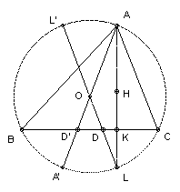

ABC is an acute-angled triangle with orthocenter H and circumcenter O. Show that there are points D, E, F on BC, CA, AB respectively such that OD + DH = OE + EH = OF + FH and AD, BE, CF are concurrent.
Solution
Extend the altitude AK to meet the circumcircle again at L. Let the line OL meet the circumcircle again at L' and BC at D. We claim that D (and the corresponding points E and E) meet the requirements.

∠BAH = 90o - B, ∠ABH = 90o - A, so ∠BHK = (90o - B) + (90o - A) = C. But ∠BLK = C (ACLB cyclic). So BHL is isosceles and K is the midpoint of HL. It follows that DH = DL and hence OD + DH = R, the circumradius. Similarly for E and F, so OD + DH = OE + EH = OF + FH.
Now ALA'L' is a rectangle with A'L parallel to BC. Hence D and D' are equally spaced about the midpoint of BC. Similarly for E and E', and F and F'. The lines AD', BE', CF' are concurrent (they pass through O). So by Ceva, (BD')/(D'C) (CE'/E'A) (AF'/F'B) = 1. But BD'/D'C = CD/DB etc, hence (BD/DC) (CE/EA) (AF/FB) = 1, so AD, BE, CF are concurrent by Ceva.

© John Scholes
jscholes@kalva.demon.co.uk
10 Oct 2002